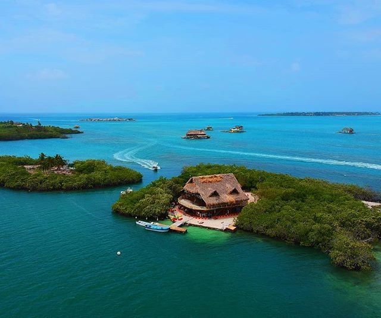

Playas
Cabo de la vela
Guajira

En este sitio podemos observar las varias y majestuosas playas, donde su belleza es la característica más importante. Un lugar muy importante dentro de este sitio turístico, es el Faro y el cerro Pilón de Azúcar, estos lugares que para la tribu Wayúu, tiene alto valor significativo mitológico y sentimental, ya que en sus creencias, en este sitio pasan sus almas al morir.
Mas informacionIsla de Baru
Bolivar

En esta isla hay varios hoteles que ofrecen una cómoda estadía, debido a que hay una alta demanda turística. Nadie se querría perder sus playas blancas y agua cristalina, un paisaje realmente deslumbrante. En sus playas se pueden gozar de diferentes deportes náuticos no motorizados como lo son los kayaks, windsurf y snorkel.
Mas informacionTolu
sucre
A tan solo 30 minutos de la capital del departamento de Sucre, se puede disfrutar de este municipio, el cual es una cantidad y variedad de piscinas naturales de agua marina, en la cual podrá descansar, caracterizada por ser aguas tranquilas, con pocas corrientes, y playas no muy profundas.
Mas informacion